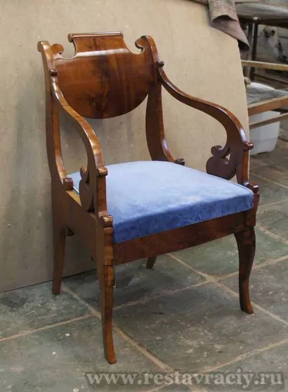
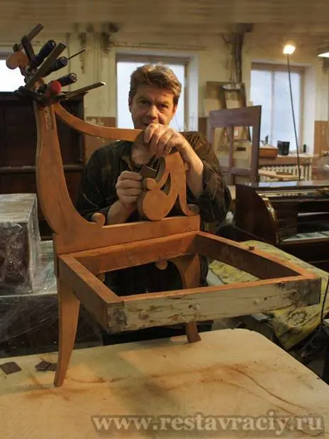
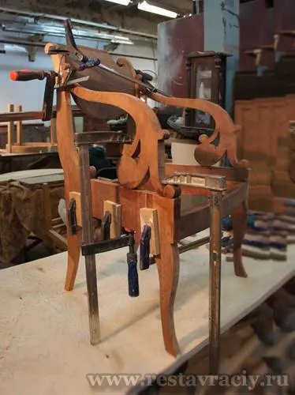
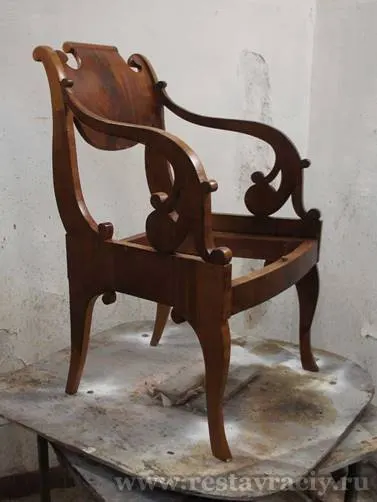
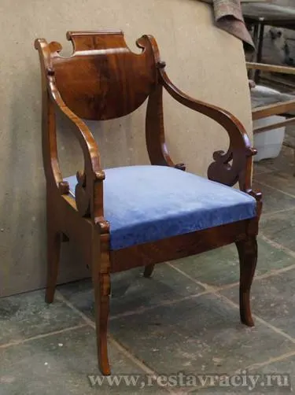
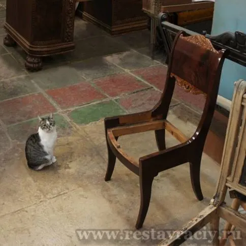
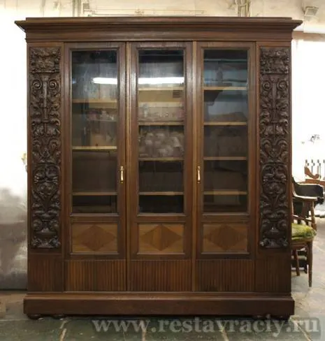
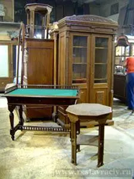

Цены
Договор на ремонт мебели
В договоре указывается дата, имя заказчика.


О чём рассказывает мастерская
- Договор на реставрацию мебели с физическими лицами
- Ремонт мебели с гарантией
- Сдать мебель в ремонт
- Ремонт мебели из дерева
- Ремонт мебели из дуба
В материале мастерской
Фотографии и детали



Открыть снимок у мастерской


Открыть снимок у мастерской


Открыть снимок у мастерской


Открыть снимок у мастерской


Открыть снимок у мастерской


Открыть снимок у мастерской


Открыть снимок у мастерской
Есть похожая вещь?
Подберите ракурсы для предварительной оценки.